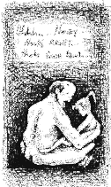

After reading various issues of GDT you may have come to the opinion that the staff of Hell's Kitchen have no moral scruples what so ever. We have no sacred cows either, although Melancholy Predator has a molting mascot, but that is way beyond the point. There is nothing we won't print and you know it.
This isn't entirely true, because GDT was started after our staff members became disenchanted with the normal realm that humor resides, and we wanted to make a nice cosy place where our disturbed mental psyches could happily cavort without fear of top ten lists, dumb blonde jokes, or any of the other hideously common things you might find while browsing through, "Truly Tasteless Jokes" (whatever volume you have, they're all the same) or receiving mass e-mailings.
So if you, like us, just can't seem to find that last shred of human decency you used to keep in your sock drawer, then join us. We don't care if you're from the U of R, RIT, or even half way around the world, we want you.

|
And if you could manage it, we would really like to have a flaming homosexual become one of our writers as well. We want some one to come along and really make us question our sexuality. However, we are not desperately in need of any ex-catholics, we already have enough of those, in fact we even have one pseudo ex-catholic.
|
|
|
|
Survey Siege-week 4
You know, we did have some devastatingly funny material filling this page, but then I realized I had forgotten to slip in the survey (as I promised) this week. So here it is. Guys, this is wasting valuable space. Answer the damn questions, or you will soon have one. Very. Boring. GDT.
"Would you rather cut sports programs or art programs in Public Schools?"
"Would you rather give your mother a dildo or a hickey?"
Send replies to GDT care of gdt@iname.com
|
Random Facts:
During the American Revolutionary War, Captain Abraham Whipple disguised his ship and joined a group of British ships sailing for the West Indies. Every night, for ten nights in a row, he and his men secretly captured one of the British ships and sailed it to Boston. Though it was great for the Americans, Whipple did it all for the money, making over one million dollars selling the ships and their contents.
Send submissions and responses to GDT care of
diablo@csh.rit.edu
or 472 French Rd, Rochester, NY 14618
Check out our web site at http://www.csh.rit.edu/~diablo/gdt
|